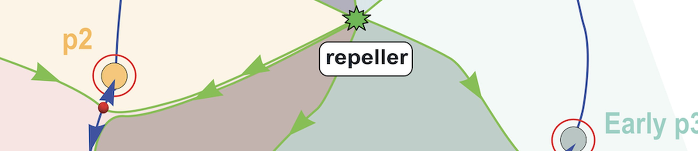
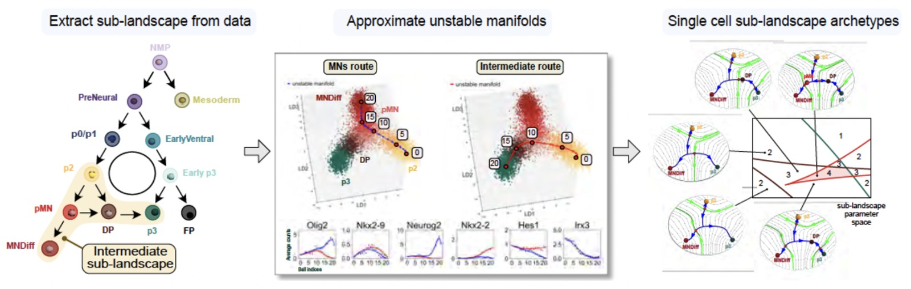
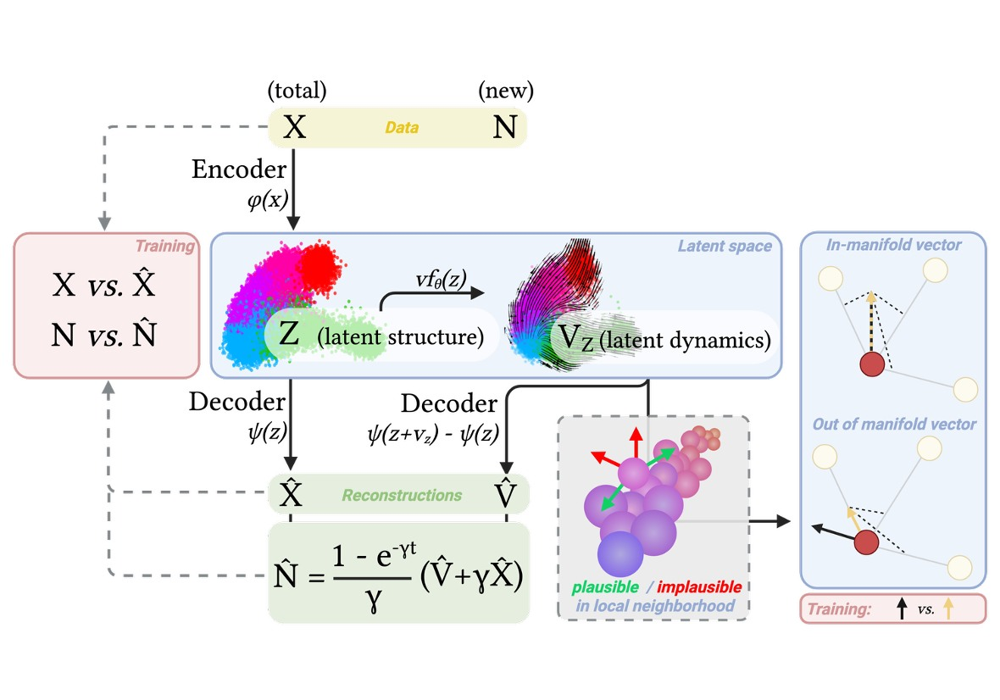
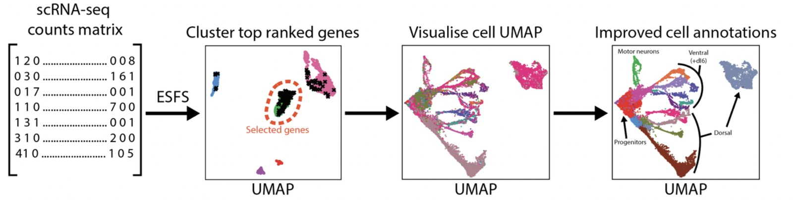

Research
Computational approaches
Embryos are dynamical systems. We build models that explain how cells choose fates, and methods that recover those dynamics from the data single-cell experiments produce.
Development involves many interacting parts changing at once and intuition is a poor guide to how this works. We use dynamical systems theory and machine learning to build models simple enough to understand and precise enough to test. Much of this is method development and collaborative, because the questions we want to ask cannot be answered with the tools that already exist.
Waddington pictured development as a ball rolling through an undulating terrain. We have made this picture quantitative. Combining catastrophe theory with statistical inference produces landscapes that can be fitted directly to experimental data and used to predict the fates of stem cells exposed to new combinations of signals. The theory suggests that cells have only a small number of ways to make a binary choice and two distinct decision structures account for the cases we have examined. We suggest these are archetypes for developmental decisions.

Applied to neural tube patterning, the approach produced a topology we did not expect. Dynamic landscape analysis identifies the stable states, maps the routes between them and generates a predictive landscape from single-cell data. Lineages that diverge early can converge on the same fate by several distinct routes. The model correctly predicted cellular responses and fate allocation for signalling regimes it had never seen.
We also develop theory for the patterning problem itself. Using optimal control theory, we asked how cells make accurate fate decisions despite morphogen levels that are noisy, changing and subject to feedback. Treating the signal and the gene regulatory network as one decision-making system rather than as separate components, intracellular signalling can be derived as the strategy that guides a cell to the right fate while spending as little signalling and as little time as possible. The strategies this recovers match properties of patterning we already observe.
Single-cell transcriptomics gives snapshots of a moving process. To recover some dynamical information we have combined metabolic labelling with deep generative models. Labelling records how recently each transcript was made, and a generative model, Velvet, turns these measurements into a model of gene expression changes: a variational autoencoder infers the direction and speed of each cell through gene expression space and a neural stochastic differential equation simulates the distributions of trajectories. Together this reproduces the structure of the data and recovers features such as the decision boundaries between alternative fates.

A third strand of work concerns methods for the analysis of single cell transcriptome data. Almost every single-cell workflow begins by choosing which genes to keep for analysis and that choice is usually made by taking the most variable ones, which confounds biological signal with technical noise. We developed Entropy Sorting, an information-theoretic alternative that ranks genes by how much they say about one another rather than by how much they vary. It recovers coherent developmental programmes across eight independent human embryo datasets without batch integration, and separates the spatial, temporal and neurogenic programmes running in parallel in the developing neural tube.

Publications
Radley A, Boezio GLM, Shand C, Perez-Carrasco R, Briscoe J
Entropy Sorting Feature Selection: information-theoretic gene set identification improves single-cell RNA sequencing data interpretability
bioRxiv (2026)
Fontaine M, Delás MJ, Saez M, Maizels RJ, Finnie E, Briscoe J, Rand DA
Dynamic landscape analysis of cell fate decisions: predictive models of neural development from single-cell data
bioRxiv (2025)
Cislo DJ, Delás MJ, Briscoe J, Siggia ED
Reconstructing Waddington's landscape from data
Proceedings of the National Academy of Sciences USA 122:e2521762122 (2025)
Maizels RJ, Snell DM, Briscoe J
Reconstructing developmental trajectories using latent dynamical systems and time-resolved transcriptomics
Cell Systems 15:411-424 (2024)
Pezzotta A, Briscoe J
Optimal control of gene regulatory networks for morphogen-driven tissue patterning
Cell Systems 14:940-952 (2023)
Sáez M, Briscoe J, Rand DA
Dynamical landscapes of cell fate decisions
Interface Focus 12:20220002 (2022)
Sáez M, Blassberg R, Camacho-Aguilar E, Siggia ED, Rand DA, Briscoe J
Statistically derived geometrical landscapes capture principles of decision-making dynamics
Cell Systems 13:12-28 (2022)
Other research areas

Gene regulation
Read more →
Tempo, growth and lineage
Read more →